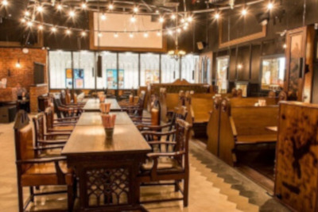
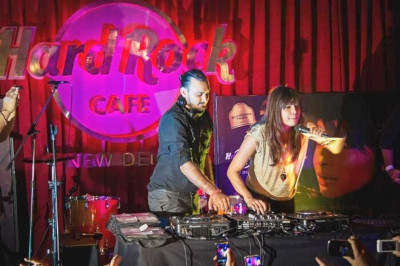
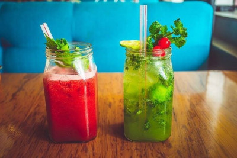
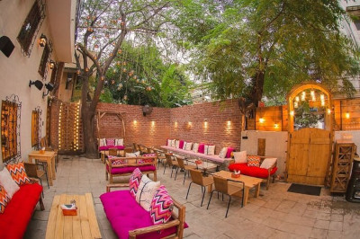
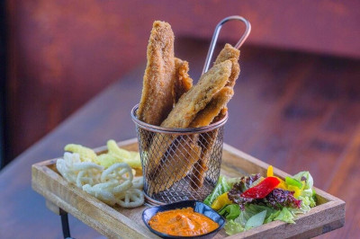
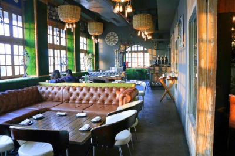

Late Night Cafes
1. Hauz Khas Social

Hunger doesn’t wear a watch. They have no sense of timing. That is when these late night cafes come in handy. Most of the ones given below stay open till past midnight to provide you a classy experience of dining and relaxing right in the middle of the night.
2. Hard Rock Cafe

As the name suggests, (and as every Dilliwala already knows) Hard Rock Cafe is where one heads when in the mood for some smashing, soul-satisfying music, limitless booze, and tasty burgers! Their playlist is always full of surprises and if you’re lucky, you might catch up some famous bands like The Local Train playing there in the evening. The music, booze, and food options are the reasons this place is steadily climbing higher and higher in the list of the best cafes in Delhi.
3. Delhi Heights

One of the best late night cafes in Delhi, Café Delhi Heights serves sinfully delicious waffles that are worth to die for. Their waffles come in abundance with a selection of whole wheat or plain dough in three flavours – banana and seasonal fruits with Chantilly toffee cream, cherries and berries, chocolate crumble, cheese and sweet potato, each bite of which is a blissfully sweet delight. Don’t forget to taste one of the best coffee in Delhi while you’re at Delhi Heights.
4. Nukkad

Located in the extreme “nukkad” (corner) of the bustling SDA market, this place will always delight you with its quaint, rustic theme, twinkling fairy lights, dim lighting, and of course, the food. You’re guaranteed to fall in love with everything that lands on your plate and into your mouth. From pizzas, keema pav, fries, pasta, chilli chicken, grilled sandwiches, chipotle chicken tikkas, to their steamy tulsi chai, the quirky menu of this rooftop cafe in Delhi will have you coming back for more.
5. Raasta

Wanna show off your singing talents? Raasta is the most rocking place in Delhi for a karaoke night. Their solid DJs and acoustic gigs once in a while attract scores of party-goer Delhiites everyday. Another thing that attracts people here is the amazing choice of Caribbean dishes unlike anywhere else in NCR. With a usual fare of some Reggae music playing in the back, Raasta is one of the best cafes in Delhi for couples and friends.
6. Farzi Cafe

Only the name is ‘Farzi’ (fake), the cafe in itself is hundred percent authentic, and marvelous! This laid-back cafe likes to experiment – blending familiar flavours and putting it in a completely unexpected shell on your platters everytime. Their amazing Parle-G Cheesecake and Tempura Fried Prawns with foam are the perfect examples! Their ‘detox’ tea infusions, sweet cocktails, lovable desserts, and fusion food are what make it one of the best cafes in central Delhi. They recently opened up in Cyber Hub as well, which is already being called one of the best new cafes in Delhi.